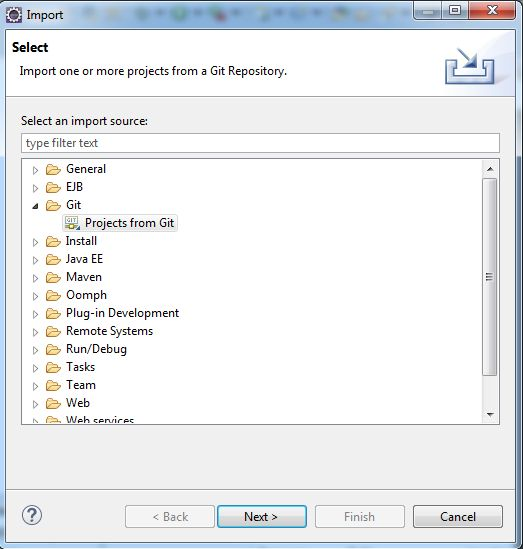
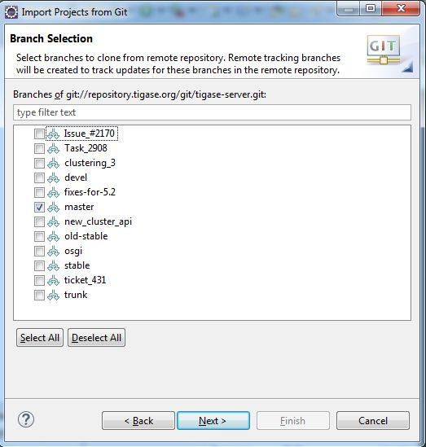

Eclipse does not come as an installer, but rather an archive. Extract the directory to a working location wherever you would like. Now install the JRE 7 software, location is not important as Eclipse will find it autmoatically.
Before we begin, we will need to clone the repository from git.
For linux operating systems, navigate to a directory where you want the repository to be cloned to and type the following into terminal.
git clone https://repository.tigase.org/git/tigase-server.git
Please see the Windows coding guide for instructions on how to obtain source code from git. If you don’t want to install git software specifically, you can use Eclipse’s git plugin to obtain the repository without any new software. First click on File, then Import… Next select from Git folder and the Projects from Git

Click next, and now select clone URI

Now click next, and in this window enter the following into the URI field
git://repository.tigase.org/git/tigase-server.git
The rest of the fields will populate automatically

Select the master branch, and any branches you wish to edit. The master branch should be the only one you need, branches are used for specific code changes

Now select the directory where you wanted to clone the repository to. This was function as the project root directory you will use later on in the setup.

Once you click next Eclipse will download the repository and any branches you selected to that directory. Note you will be unable to import this git directory since there are no git a project specific files downloaded. However, once downloading is complete you may click cancel, and the git repository will remain in the directory you have chosen.